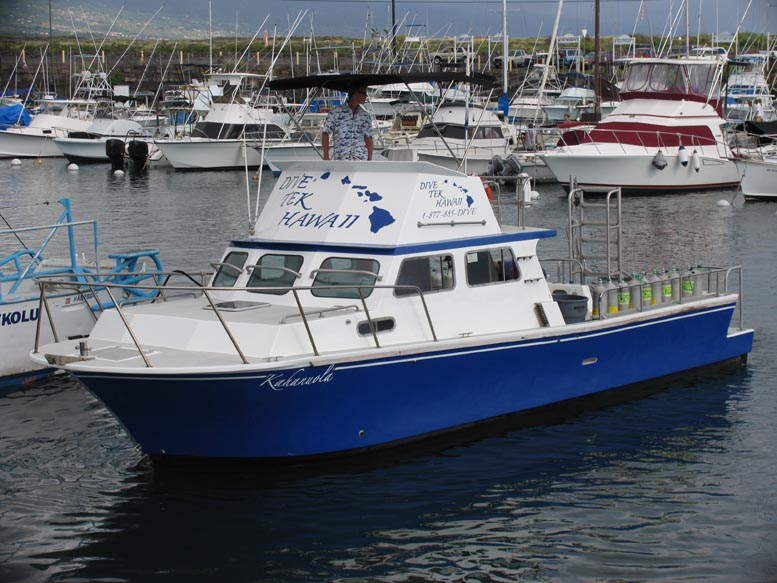
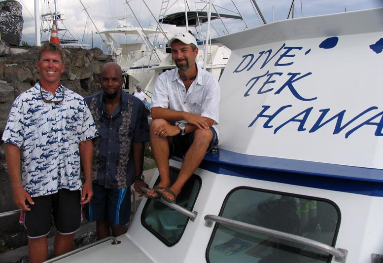
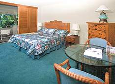
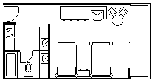
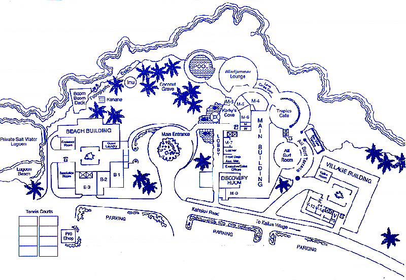
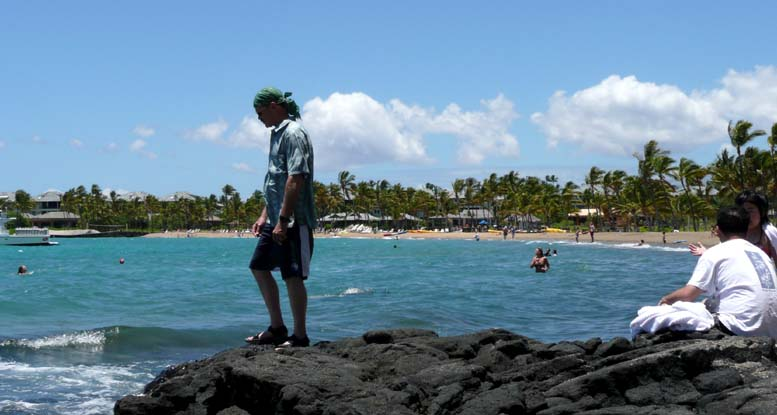
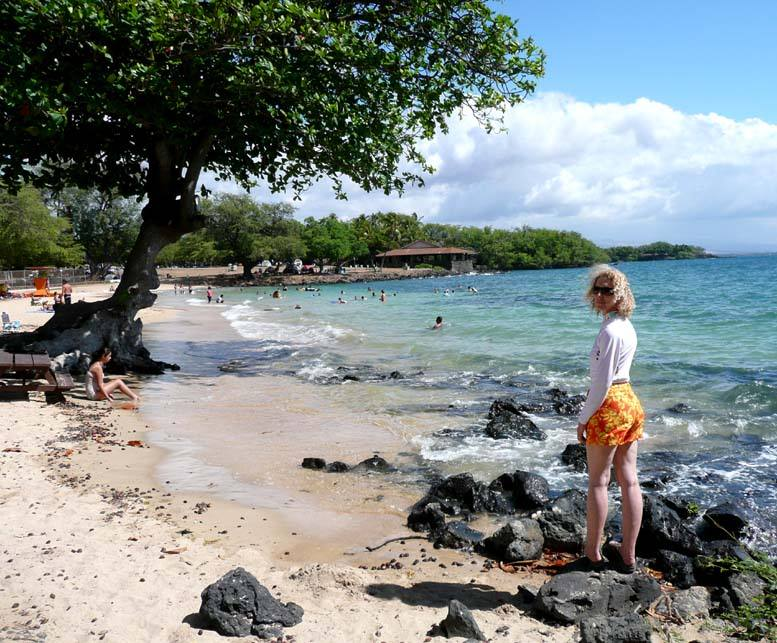
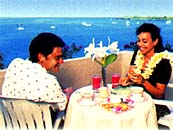
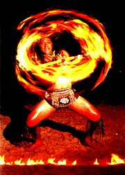

Royal Kona Resort is newly renovated, now 3 stars!

U.S. Dive Travel is partnered with the top pro diving crew -- DIVE TEK HAWAII -- on the Big Island, Hawaii.
© Copyright U.S. Dive Travel Network. All rights reserved.
The BIG ISLAND & KAILUA-KONA are like a refreshing tropical fruit ....
.... just waiting to be plucked, tasted, experienced & enjoyed. Come visit & see!
© Copyright U.S. Dive Travel Network. All rights reserved.
© Copyright U.S. Dive Travel Network.
HAWAIIAN ISLANDS
KONA COAST, the BIG ISLAND:
Now the best-value 3-star hotel on the Big Island !!
best scuba diving guides in Kailua-Kona:
One of Dive Tek's senior guides was a PADI Course Director.
[ Call us at 952-953-4124 for the best current package & pricing info on the Big Island.]
All prices subject to possible change; & there are periodic specials.
CHECK our BIG ISLAND ALOHA SPECIAL:
(All prices for Big Island diving packages are per day & include an unlimited buffet breakfast
for 2 persons + double-occupancy room with two double beds + A/C, cable TV, small fridge & private balcony. Add Hawaii sales
tax to all room rates. These prices for Big Island diving packages apply only to visits of 7 nights or more. We feel these numbers prove Royal Kona Resort is the best lodging bargain on the Big Island ! )
The Big Island diving is a smorgasbord for deal-conscious tourists this year, a true buyer's market that comes along maybe once a decade in Hawaii. All prices listed here are room costs per day, for two persons together in a room. Add $TBD per person / day for triples in any room. Children younger than 3 years old, staying with parents, are free. Children 3-12 years old are $33 per day extra. Youngsters 12 years or older are considered lodging "adults." For all dive packages -- no more than two children with parents in any room category. Remember, resort charges each room about USD $8 per day for parking lot access / security / spaces, since about 1999.
- Partial Ocean View Room: 2 double beds --
$TBD + tariff for room + unlimited buffet breakfast for two !
- Ocean Front Room: 2 double beds --
$TBD for room + unlimited buffet breakfast for two ! - Deluxe Ocean Front Room: King bed & corner room --
$TBD + tariff for room + unlimited buffet breakfast for two !

Keith Keizer, seated, was founder & owner of DIVE TEK HAWAII -- on the Big Island, Hawaii.
© Copyright U.S. Dive Travel Network. All rights reserved.
DISCOUNT DIVE PACKAGES:
(All prices subject to change & include gear storage, tank setup, deli lunch, tanks,
weights & all taxes):
- 1 day of 2-tank boat diving -- $TBD per diver.
- 2 tank beach dive with private guide -- $TBD per diver.
- Half-day snorkeling boat trip -- $TBD per person.
- Twilight 2-tank night dive -- $TBD per diver.
It's an amazing scuba diving adventure with dozens of manta rays cavorting like playful pups.
This classic of Kona diving we recommend as a "must see" for Hawaii diving enthusiasts.
Even snorkelers love this dive site, though the cross-shore currents & good old Hawaiian
surge can kick up close to shore on some evenings, so caution is always well advised when
you're snorkeling or scuba diving at this Kona diving classic -- at night. Enjoy the manta rays !

Ocean-view room at Royal Kona Resort.
All copyrighted hotel photos are provided
by our longtime friends at Royal Kona.
|
 |
 |
If you scan the dive travel journals & tropical travel magazines regularly, you're probably as weary as we are of destination reviewers who heap glossy praise on properties that hardly merit mention. With our wary eye towards hyperbole, we are going to lay a grand one on you right now. And it's not a bit over the top. After more than 34 years of world travel, some two dozen countries visited, & more than a decade of diving the Pacific Rim, we believe that one of the very best value destinations for scuba divers & snorkelers in the greater Pacific is on the Big Island of Hawaii -- & specifically on the Kona Coast. Air tickets from the West Coast are duck soup, accommodations clean & affordable, the local people are some of the friendliest & most hospitable in Polynesia, & the scuba diving is outstanding. What's more you have a major "Bang for the Buck Factor" -- the lowest scuba diving prices of any Hawaiian island today. Last-minute dive packages make special sense out here, because we can often find 11th-hour lodging & dive boat space, with a little moxie, & at prices that make other run-of-the-mill dive trips seem pretty pricey. Kona diving = sensible spending.
Therefore, we heartily recommend the Royal Kona Resort (formerly the Kona Hilton) & our respected partners at Dive Tek or Big Island Divers, as respectively the best-value hotel & dive operation on the Big Island. We have spent more than 55 weeks onsite, diving, snorkeling, hiking, doing photo shoots, studying scores of Hawaii resorts since 1990, & we know these islands well. After several in-depth reconaissance trips to the Big Island, we feel that folks looking for a low-cost, high-quality vacation -- whether you're singles, couples or families -- will be delighted by the sheer economy & quality combo that Kailua-Kona offers you every charming day you spend here.

Map of hotel grounds provided courtesy of Royal Kona Resort management.
Hawaiian Hotels & Resorts, the parent company of Royal Kona Resort, has begun full refurbishments in the 452 guest rooms & in the oceanfront Tropics Café Restaurant & Windjammer Lounge to the tune of several million dollars. In August 2001 they began property improvements by installing new carpet & guest room chairs. By the middle of December 2001 all oceanfront rooms were fully furnished with upgraded furniture including dresser, chairs, table, end tables, armoire, mirrors, fixtures, lamps, box spring & mattress. In addition, all guest rooms will receive a fresh coat of paint & new in-room art. A year later, most of the further-bak rooms were refurb'd as well.
The Royal Kona's popular open-air Tropics Café & adjacent lounge will also get new carpet & chairs to further enhance the guest's Hawaiian experience with breathtaking views & sunsets over Kailua Bay in this unique oceanfront atmosphere. "We're really looking forward to introducing new rooms & dining room décor at the Royal Kona Resort," noted Glenn Hogan, president of Hawaiian Hotels & Resorts. "We will continue to provide guests with the best values in the Kailua-Kona area with no rate increases in 2002 while improving the rooms & dining experience the valued guests receive." The décor of the guest rooms will reflect a rich Pan Pacific influence comparable to many four to five star resorts in exclusive resort locations within the Hawaiian Islands.
The Hawaiian Hotels & Resorts chief says the resort's three-building design has allowed the Royal Kona to carry out these renovations with no interruptions to the valued guests. Located within easy walking distance of the village of Kailua-Kona & its restaurants, shops, historical sites & attractions, the conveniently located, 11-acre Royal Kona Resort combines a spectacular location with a wide variety of full-service amenities. The resort features open-air dining, split-level swimming pool, a private beach & saltwater lagoon, the Royal Kona Tennis Club, Massage & Spa Center, complete meeting & banquet facilities, & the oceanside Drums of Polynesia Luau. Hawaiian Hotels & Resorts have done their job, ladies & gentlemen. Beginning to see why Royal Kona is a cut apart from garden variety Hawaii resorts?

Pano-view from 1,400 feet elevation in Holualoa Village, of the KONA COAST, BIG ISLAND, HAWAII.
© Copyright U.S. Dive Travel Network. All rights reserved.
There's plenty more to any Hawaii resorts vacations than pool lounging, especially on an island as richly blessed with vistas & interesting niches to explore -- like da kine Beeg Eye-lin. U.S. Dive Travel's owners spent part of their honeymoon here in Kailua-Kona, & they say they'll likely return every couple years for dive vacations until they're too old to flap a fin, or crack a grin. This island, & this town of Kailua-Kona, are wonderful in every way. For any person with enough time & imagination, there are virtually no limits to the exciting side tours you can take on the Big Island after & between diving days. Just grab a map & your rental car (which we'll give you for free!) & you're off like a Kona manta ray in full-tilt glide. This island of Hawaii is something else -- for dive trips, side trips, car trips -- you name it braddah. To really do a Kona diving trip well, leave 3-5 days for the inspiring side tours. We're talking "must-see TV" (telephoto vividness).
Let's start with the magnificent geography of the Big Island -- one of its prime assets. Hawaii, the youngest, largest & furthest East & South of the Hawaiian chain, is one of only two islands in the world that encompass every major type of climate & topography that exists anywhere else on earth (barring Arctic climate of course). Know what the other island is? Give up? Just call us & we'll chat.
Hawaii, the Big Island, truly lives up to its moniker. If you squeezed the total land area of the entire Hawaiian island chain, even the countless little atolls that run hundreds of miles west of Kauai out to Midway, that total surface area would still be less than the land mass of the Big Island. Hawaii is more than 250 miles around its outer rim by highway, & more than 90 miles long from North to South, with a total area of 4,000 square miles. Now let's explore why there's a lot more the Big Island of Hawaii than dive trips offer. This place is Geo-Diversity Central, pure & simple.
Perhaps the most world-famous site is the always active volcano, Kilauea, which ancient Hawaiians believed was the venting fury of the mountain goddess Pele. Kilauea is the planet's largest active volcano, in area, & affords many visitors the thrill of a lifetime to see its searing rivers of molten orange lava, flowing downhill most any evening of the year.
The Big Island also features two mammoth volcanoes, Mauna Loa & Mauna Kea, that are more than 13,700 feet high, & both of which have frequent snowstorms during the winter. Mauna Kea even has permanent snow fields near the top, all year round. So on the Big Island you actually can snowboard in the morning near a summit almost as high as Mount Rainier, then ride a horse through Mexico-like high desert in the early afternoon, then descend to sea level, drive through a maritime rainforest climate on the Hilo side & go big-wave surfing, then do a night dive to 60 feet & frolic with eels, mantas & pufferfish, then surface, shower up & party down to a reggae band until the wee hours -- all on the same day! (If you're a bionic meld of Arnold Schwarzenegger & Gabby Reese, that is).
The multiple sub-climates & geographical zones that grace this beautiful island of Hawaii are almost too many to name. You'll find gorgeous high meadows carpeting hundreds of square miles, endless rolling green hills at 4,000-plus feet in the North, way back in the cool heart of the Kohala Mountains. This region is amazingly reminiscent of New Zealand's high grazing lands. Here sheep, & cattle by the thousands, herded by genuine cowboys on horseback, roam the lush hillsides. There's even a llama farm up in "them thar hills!"
Down below these mountains, to the West, are the most beautiful beaches on the Big Island -- the sugar-sand strands of the Kohala Coast, where 5-star to 5-diamond hotels are perched seaside, & where the Beautiful People come to romp & prowl & escape.
The Hamakua Coast on the island's northeastern flank -- from the village of Paauhau south through the Laupahoehoe Point region on down to Honolii Beach Park -- is one of the wildest & purest wilderness areas left anywhere in the Hawaiian Islands. Here scores of clean cool streams plummet off the eastern flanks of Mauna Kea (home to one of the world's top stellar observatories) & they wind their quicksilver way down to the dark blue sea. You can randomly choose just about any stream you see from the road, park your car, hike up along little paths for miles to a secluded waterfall, then go skinny-dipping in your own private pool if you wish. Here on the Big Island of Hawaii, you'll feel like you were reborn in a vision of Green Mansions! Find some secret hide-aways on your own -- that's the best fun of all. We'll keep our special "Power Spots" close to the vest; you understand.
The rainy & windy Hilo side of the island (East) is home to the largest orchid & macadamia nut farms in the world. This is a very local district & the people, many with native Hawaiian blood, kind & generous, almost make you feel like you're on a South Pacific island. There are thousands of wild acres & park sites all over the Big Island, where campers can enjoy a few days of peace away from the madding tourist crowds that flock to places like Waikiki on Oahu. Another plus for outdoor enthusiasts: Hawaii island has no poisonous bugs nor snakes & no poison ivy-type plants to sully your camping fun. This Big Island seems graced by a special spirit of tranquility & health.
The Puna District along the southern coast offers the dry & eerie Chain of Craters Road that snakes along from sere oceanside lava flows, some centuries old & some brand-new, to the summit of Kilauea, the generator of those twisted tons of once-molten rock. The entire southern coast of Hawaii Island is marked by little pocket coves, & long rambling stretches of beachfront, that hold green sand, black sand, white sand, gray sand & deerskin sand.
For gourmets, the Big Island is also the only place in the world where you'll find genuine poha berries, a rare & exotic fruit that produces jam tasting like a cross between cranberry & gooseberry -- it's delicious! The Kona Coast is also the only place in the United States where full-scale coffee production is chugging along all year long. You like Java? Kona roast is one of the world's finest gourmet coffees -- enough to start your heart with a jolt! This island's pure & aromatic coffee beans are renowned worldwide for caffeine crank-em-up power. So why not spice up your Kona dive packages with lean-n'-mean caffeine-bean packages, too!

Guests & locals wistfully relax on Waikoloa Beach on the KOHALA COAST, BIG ISLAND, HAWAII.
© Copyright U.S. Dive Travel Network. All rights reserved.
The entire Kona Coast, a vast stretch from Kailua-Kona village in the north to Ka Lae Point, the southernmost spot in the United States, is blessed with a gentle lee that offers warm clear scuba diving waters & easy currents, huge moray eels & Hawaiian sea turtles almost all year round. The hard corals, lava tubes, caverns & underwater canyons along the Kona Coast offer some of the best marine critter encounters in all of Hawaii. One of many examples is the famous "Manta Madness" dive, in less than 40 feet of water, just off the rocky coast at the Kona Surf Hotel on South Alii Drive. Here, nearly any night of the year you'll see big manta rays glide up to you, flapping around your head & sweeping past like playful sea otters. This is one of the world's best-known manta ray dives, & a venerable classic of Kona diving lore.
You could go snorkeling or scuba diving every day for three months (if your PADI tables allowed!) & you wouldn't see half of the best dive sites available on the western shores of Hawaii island alone. That's because the Big Island offers infinite adventure, which is why some of our clients return year after year to Kailua-Kona like devotees on an emotionally recharging pilgrimage. In fact, the only thing that keeps us from going back to Hawaii island every year is our blinking work schedule! (By "blinking" we mean, of course: "blankety-blank.")
Dive Tek, or Big Island Divers rank among our favorite dive operations in Hawaii. They have sturdy speedy boats, ace diving guides, delicious deli lunches & knowledge of all the best remote & unspoiled reef sites. They also welcome non-divers too. Fans of simple snorkeling are always welcome, too -- please remember that!
Warren D'Aquin, one of the senior guides for Dive Tek, is one of few PADI Course Directors in the state of Hawaii. Many Dive Tek or Big Island Divers dive trips have a professional underwater videographer on board, to capture your adventure on a tape you can buy right off the boat, after you dive. Yes, the Dive Tek or Big Island Divers videographer has a fully-equipped studio right on board! Your Kona diving guides each day will pamper you, rinsing & storing your gear, helping you don it, helping you back into the vessel if you're lugging heavy camera gear. Besides training many of the instructors on the Big Island, Warren at Dive Tek is an ace U/W photographer; so he can give you some excellent Hawaii diving photo tips.
One of many factors our clients like about Dive Tek & Big Island Divers is the kindness factor. You'll feel that your Dive Tek or Big Island Divers dive guide is firm on safety, but friendly & easy to work with, no matter what level of scuba skill you have. These guides have more than 70 regular dive sites pegged, & every month they explore new ones for your future enjoyment! No ho-hum dive vacations on Planet Kona, amigos. Hawaii diving & snorkeling are something we will never filter out of our blood; it's addicting in every healthy sense of the word.

Spencer Beach on the KOHALA COAST, BIG ISLAND, HAWAII, where playful sea turtles abound for snorkelers!
© Copyright U.S. Dive Travel Network. All rights reserved.
Now let's examine the Royal Kona Resort, by far our favorite hotel on
the Big Island. The phrase -- Royal Kona Resort specials -- is almost a clause lifted from
The Department of Redundancy Department. The everyday prices & value at
Royal Kona Resort are so incredibly kind to the working person's wallet, that to highlight a special almost
seems superfluous. There are few dive resorts in the Neighbor Islands of Hawaii that can hold a
candle to Royal Kona Resort. Mind you, Royal Kona Resort does not serve only scuba divers. But
all sorts of folks heading into a tropical vacation -- whether snorkelers, reg chompers, beach baskers
-- would love the economy & service of Royal Kona Resort.
The staff members at Royal Kona Resort are warm & hospitable, always willing
to go the extra mile to help you. The prices are incredible, compared to
most other 3 star Hawaii resorts we have reviewed. The meals at Royal Kona Resort are affordable & delicious, in
an open-air veranda restaurant where you literally can hang your elbow
over the wall, next to your table, above the whispering surf below.
The Royal Kona Resort (through which we'll give you a free all-you-can-eat buffet breakfast plus a new rental car each day!) features spacious rooms, most of which have at least a partial ocean view from your private balcony, plus A/C, color cable TV, small refrigerator & queen-sized beds, plus large vanity & shower areas.
You'll find relaxing entertainment nightly at the Royal Kona Resort's Windjammer Lounge, right at oceanside, & the sunsets are often spectacular here during Happy Hour (good timing!) The Royal Kona Resort's "Drums of Polynesia Revue" & luau is the only authentic oceanfront luau on the Kona Coast. Folks drive from miles around for the huge feast & the wildly athletic native dancing every Monday, Friday & Saturday night. Especially Friday & Saturday nights, the Kona Coast is jumpin'. This is one Lalapalooza of a luau, folks.
Set on 11 beautifully landscaped acres, flush with tropical flowers, trees & birds everywhere, the Royal Kona Resort also offers a private sandy lagoon next to a split-level swimming pool, plus four tennis courts, three of which are lighted for night play. Golf courses are easily reached nearby. Royal Kona Resort also offers spacious meeting facilities. If we had to pick our top five favorite snorkeling or scuba diving destinations in the world, & could only return to one of them each year, the Royal Kona Resort & Dive Tek or Big Island Divers team are on that A list.
|
 |
 |
FOR MORE INFORMATION or RESERVATIONS:
Please feel free to contact:
John Hessburg, General Manager
Susan Hessburg, Operations Manager
U.S. DIVE TRAVEL Network
PMB 307 - Suite # 116
15050 Cedar Ave. S.
St. Paul, Minnesota 55124-7047
Voice Mail: 952-953-4124
Fax Line: 952-431-5023
E-mail: divetrip@bitstream.net
Website: www.usdivetravel.com
******************************************************

Kona's undersea delights are cool surprises.
Pic' by ace diving guide, Warren d'Aquin.
IMPORTANT REMINDER about PRICES & TARIFFS:
All Hawaii diving package prices listed here are subject to possible change in this steadily evolving travel market. Lodging, side tour & diving prices are traditionally stable, while air prices can fluctuate daily. Until air tickets are issued, all airlines reserve the right to change airfares without notice -- an industry standard per FAA rules. We at U.S. Dive Travel will price-protect you to the utmost of our professional ability; & that has been our pledge for one decade now. Our Hawaii resorts packages normally include excellent wholesale discount air tickets for our clients who book early enough to secure limited seats. Remember please, the federal government has deregulated all U.S.-based airlines, so only they control their pricing -- not any travel professionals. Early is good when seeking the best air ticket rates, & specials at our Hawaii resorts.
Unless specifically noted, these above scuba diving packages are prices for only the land-based portion of the dive resorts, in most cases reflecting double-occupancy rooms. At many Hawaii dive resorts, there will be no triple-occupancy rooms offered. Some exceptions will be noted. International air tickets & commuter "island-hopper" seats are always extra above these land costs. Nominal service fees are also extra for air tickets & the vessel + side tour components. The baseline tariffs for all clients start at $35 per person for the land portion + $20 pp for the air tickets. Late-booking clients may receive slightly higher tariffs on the lodging + diving at many of our Hawaii dive resorts.
The preferred payment mode for all of our Hawaii dive resorts, side tours & air ticket specials is by cashier's check or wire transfer in U.S. dollars. All clients living outside the USA or Canada will need to pay for their dive vacations via direct wire transfer only. No personal checks will be accepted for the land portion of any reservation. Thank you for your gracious understanding. Our service level is the highest & our prices the lowest in this industry, & thus we need to preserve a reasonable margin. For published-fare air ticket bookings, USDT always accepts Visa & Mastercard. For discount wholesale air tickets, USDT accepts only cashier's checks or wire transfers, please.
Best of luck with your dive travel plans. We hope your Hawaii diving vacation is a safe & satisfying adventure. Blessings & best wishes with ALL your dive vacations at our high-value, low-cost Hawaii resorts.
Best fishes too!
>////*> <*\\\\<
John Hessburg & Susan Hessburg, Mgrs.
U.S. Dive Travel Network.
| Home / Dive Resorts / Live-Aboards / Snorkeling / Who We Are / Book a Trip |
© Copyright U.S. Dive Travel Network.